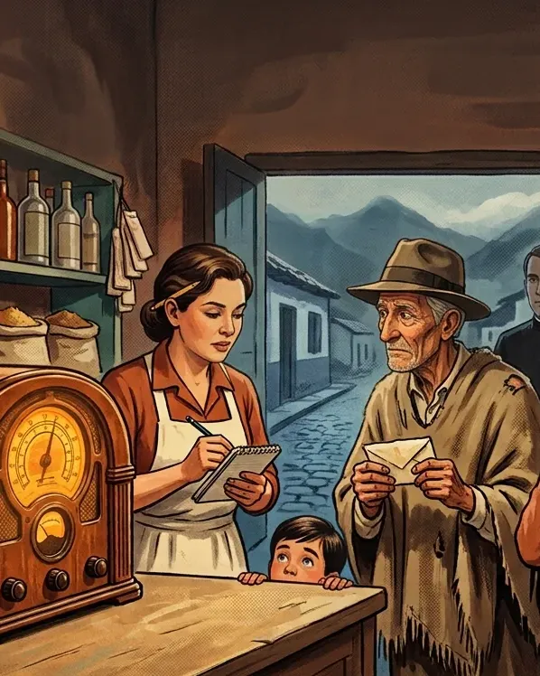

Radionovelas de ayer presenta
La Hora de la Fortuna

Toque la perilla naranja
Capítulo 2 · El secreto de todo el pueblo
Guatancuy, 1958: el hombre más pobre del pueblo se gana el concurso de la radio y todos se enteran.
¿Usted cree que un pueblo entero puede guardar un secreto?
De qué trata este capítulo
Guatancuy, octubre de 1958. Tierra fría, a tres horas de flota de la capital.
Capítulo 2 de 10.
Eutimio murió de la dicha y el premio se entrega en persona. Obdulia tiene una idea que el padre no quiere oír.

La programación
Un capítulo nuevo cada mañana a las 6:00 a. m., hora de Colombia.
Ya salió
1. El hombre de los sobresvie 16 octEutimio, el más pobre del pueblo, lleva dos años mandando sobres a la radio. Esta noche dicen su nombre.2. El secreto de todo el pueblosáb 17 octEutimio murió de la dicha y el premio se entrega en persona. Obdulia tiene una idea que el padre no quiere oír.3. Llegó antes de tiempodom 18 octSaturnino ensaya para ser Eutimio. Tienen ocho días. De la flota del viernes se baja alguien que no esperaban.Lo que viene
4. La gripa de Eutimiolun 19 octObdulia inventa una gripa, el forastero pregunta por una muerta de hace treinta años y don Belisario vio una tumba nueva.
5. El precio del silenciomar 20 octObdulia cierra un trato con don Belisario y el delegado por fin ve a Eutimio. Pero pide quedarse a solas con él.
6. Lo que dice el libromié 21 octSaturnino responde por un muerto, el forastero se vuelve frío y el padre Severo abre un libro que llevaba treinta años cerrado.
7. Las cartas del ranchojue 22 oct
8. El otro don Régulovie 23 oct
9. Me llamo Álvarosáb 24 oct
10. El premio de Eutimiodom 25 oct
Leer el guion de este capítulo
- El narrador
- Radionovelas de ayer presenta… La Hora de la Fortuna. Capítulo dos: El secreto de todo el pueblo.
- El narrador
- En el capítulo anterior, Eutimio Chitiva, el hombre más pobre de Guatancuy, llevaba dos años mandando sobres al concurso de la radio. Decía que con el premio iría a la capital, a buscar a alguien. Y esa noche de miércoles, en la tienda de Carmenza Rincón, la radio dijo su nombre: cincuenta mil pesos. Eutimio no gritó ni brincó. Dijo que iba por su cédula, y salió. El pueblo celebró sin él. Pasó una hora, y no volvió. Carmenza subió hasta el rancho con Saturnino Cuervo, el sacristán. Golpeó la puerta una vez. Golpeó otra. Y nadie respondió. Escuchemos.
- Carmenza
- Saturnino, esta puerta no tiene candado, solo la tranca. Ayúdeme a quitarla.
- Saturnino, el sacristán
- ¿Quitarla, Carmenza? ¿Y si… y si el viejo se asusta? Con el perdón de la sotana del padre Severo, uno no se mete así en casa ajena.
- Carmenza
- Quítela, Saturnino.
- Carmenza
- Don Eutimio… don Eutimio, soy yo, Carmenza. No se ve nada. Saturnino, ¿tiene con qué alumbrar?
- Saturnino, el sacristán
- Tengo los fósforos de la sacristía, Carmenza. Tenga. Y ahí… ahí encima del baúl se ve un cabo de vela.
- Saturnino, el sacristán
- Mírelo, Carmenza. Ahí está, sentado en el catre. Y con la cédula en la mano. Se quedó dormido, el viejo. ¡Eutimio! Despierte, hombre, que lo está esperando todo Guatancuy.
- Carmenza
- Don Eutimio, despierte, que se lo ganó. Deme la mano y lo ayudo a…
- Carmenza
- Está… está frío, Saturnino.
- Saturnino, el sacristán
- ¿Cómo que frío? Será el frío del rancho, Carmenza, que aquí hiela. Sacúdalo un poquito.
- Carmenza
- No es el frío del rancho. Don Eutimio no respira, Saturnino. Don Eutimio se nos murió.
- Saturnino, el sacristán
- ¡Ave María Purísima! En el nombre del Padre y del Hijo… ¡Carmenza, se murió! ¡Se murió el viejo!
- Carmenza
- Dos años, Saturnino. Dos años esperando que la radio dijera su nombre. Y la noche en que por fin lo dice… se sienta en su catre, y se muere.
- Saturnino, el sacristán
- Pero mírele la cara, Carmenza. Está… está sonriendo. Yo nunca había visto a Eutimio sonreír así. Se murió de la dicha.
- Carmenza
- De la dicha. Cincuenta mil pesos, y no alcanzó ni a tocarlos. Toda la vida pobre, Saturnino, y se muere la noche en que deja de serlo.
- Saturnino, el sacristán
- Y yo esta tarde riéndome de él, Carmenza. Diciendo que primero se ganaba el premio la mula de don Belisario. Dios me perdone. Eutimio, perdóneme, hombre.
- Carmenza
- Ya habrá tiempo de rezar, Saturnino. Ahora necesito que me ayude.
- Saturnino, el sacristán
- ¿Y qué hago, Carmenza? Yo con difuntos no sé sino tocar las campanas.
- Carmenza
- Baje a la casa cural, Saturnino, y tráigame al padre Severo. Y por el camino… ni una palabra a nadie, que la gente está de fiesta.
- Saturnino, el sacristán
- Ni una palabra, Carmenza. Yo… yo soy una tumba. ¿Y usted se queda aquí sola, con el finado?
- Carmenza
- Yo me quedo. Él amaneció sentado en mi puerta la noche en que se agravó mi papá. Ahora me toca a mí acompañarlo.
- Carmenza
- Se lo ganó, don Eutimio. Dijeron su nombre, clarito, para que lo oyera todo el país. ¿Y ahora quién va a ir a la capital? ¿A quién era que usted quería ir a buscar?
- El narrador
- Saturnino Cuervo prometió no decir una palabra. No aguantó ni dos cuadras: lo contó en la primera puerta, y de puerta en puerta lo supo todo Guatancuy. La fiesta se apaga y cada quien se va para su casa. Cuando Carmenza vuelve a la tienda, cerca de las diez, solo queda misiá Obdulia.
- Misiá Obdulia
- ¡Carmenza, mija! Venga para acá, que está helada. ¿Es verdad lo que anda contando Saturnino de puerta en puerta? ¿Es verdad que Eutimio se murió?
- Carmenza
- Es verdad, madrina. Y eso que le pedí a Saturnino que no dijera nada: ese hombre es un chismoso. Lo encontramos sentado en el catre, con la cédula en la mano. Allá quedó el padre Severo, rezándole.
- Misiá Obdulia
- ¡Virgen Santísima! Y nosotros aquí tomando cerveza a nombre de él. Yo recogí las botellas, mija, y dejé el radio prendido, porque dijeron que iban a repetir el nombre del ganador del concurso.
- Carmenza
- Déjelo, madrina. Ya casi quitan la luz.
- El animador del concurso
- ¡Atención, amigos oyentes! Radio Cordillera repite la gran noticia de esta noche. El ganador de La Hora de la Fortuna es don Eutimio Chitiva, de Guatancuy. ¡Cincuenta mil pesos, por cortesía de Chocolate El Arrebol!
- Misiá Obdulia
- Óigalo, mija. Y el pobre ya no lo oye.
- El animador del concurso
- El delegado de la casa patrocinadora, don Régulo Peñaranda, viajará a Guatancuy el sábado dieciocho de octubre, en la flota de las cuatro de la tarde. Entregará el premio en persona, en acto público, al ganador con su cédula en la mano.
- El animador del concurso
- Y recuerde: si pasados diez días no hay a quién entregarlo, los cincuenta mil pesos se sortean de nuevo, aquí, en La Hora de la Fortuna. Chocolate El Arrebol… ¡el que madruga con usted!
- Carmenza
- ¿Oyó eso, madrina? Si no hay a quién entregarlo, lo vuelven a sortear.
- Misiá Obdulia
- ¿Cómo que lo vuelven a sortear? Esa plata es de Eutimio, así esté muerto. Que se la den al pueblo, que fue el que lo aguantó toda la vida.
- Carmenza
- No es así de fácil, madrina. Páseme esa envoltura de chocolate que está en la repisa. Aquí atrás hay una letra menuda, y yo nunca la había leído.
- Carmenza
- A ver… Dice: premio personal. En caso de fallecimiento del ganador, se entregará a sus herederos de ley.
- Misiá Obdulia
- ¿Herederos de qué, mija?
- Carmenza
- De ley, madrina. La familia. Los hijos, los hermanos, la mujer.
- Misiá Obdulia
- Yo no es por hablar, mija, pero… ¿y si fuera cierto lo del niño de las monjas?
- Carmenza
- Madrina, treinta años lleva ese cuento, y aquí nunca vino nadie a preguntar por don Eutimio. Ni una carta le llegó. Don Eutimio no tenía a nadie.
- Misiá Obdulia
- Entonces esa plata se pierde. ¡Ave María Purísima! Lo único bueno que le ha tocado a Guatancuy en toda la vida. Con lo que se podría hacer aquí con cincuenta mil pesos…
- Carmenza
- Don Eutimio esperó ese premio dos años, madrina. Y en diez días, si no hay a quién dárselo, se lo gana otro pueblo.
- Misiá Obdulia
- Mija, dígame una cosa. Ese delegado que viene de la capital… ¿alguna vez le ha visto la cara a Eutimio?
- Carmenza
- ¿Qué se la va a haber visto, madrina? Si don Eutimio nunca salió de Guatancuy.
- Misiá Obdulia
- Entonces el delegado no sabe cómo es Eutimio. No sabe si es alto o bajito, ni qué voz tiene.
- Carmenza
- ¿Y eso qué importa, madrina? Los muertos no cobran premios.
- Misiá Obdulia
- Los muertos no, mija. Pero… ¿y si alguien se hiciera pasar por él? Diez días no más. Un viejo del pueblo, con la ruana de Eutimio y la cédula en la mano.
- Carmenza
- ¡Madrina! ¿Sumercé se está oyendo? A don Eutimio no lo hemos enterrado todavía. Y eso que dice es un engaño.
- Misiá Obdulia
- Yo no dije nada, mija. Yo solo pregunté. Pero piénselo: el techo de la escuela, el agua…
- Misiá Obdulia
- ¡Ay! Se apagó el radio. Quitaron la luz, mija. Ya son las diez.
- Carmenza
- Prenda la vela, madrina. Y no me hable más de eso.
- El narrador
- Medianoche. La tienda de Carmenza sigue abierta, a la luz de una vela. Nadie en Guatancuy ha podido dormir, y los vecinos se han ido arrimando a la puerta.
- Saturnino, el sacristán
- Buenas noches, Carmenza. Buenas, misiá Obdulia. Con permiso. Allá dejé al padre Severo, rezándole al finado. Y… y aquí afuera está medio pueblo, que nadie duerme.
- Carmenza
- Siga, Saturnino, y deje la puerta abierta, que los de afuera también oigan.
- Misiá Obdulia
- Carmenza, mija, cuéntele a Saturnino lo que dijo la radio. Y lo que dice la envoltura.
- Carmenza
- La radio dijo que si en diez días no hay a quién entregarle el premio, lo vuelven a sortear. Y la envoltura dice que, muerto el ganador, la plata es de sus herederos. Y don Eutimio no tenía a nadie, Saturnino.
- Saturnino, el sacristán
- ¿Entonces… entonces los cincuenta mil pesos se pierden?
- Misiá Obdulia
- A menos que el delegado encuentre a Eutimio vivo.
- Saturnino, el sacristán
- ¿Vivo? ¡Si yo mismo lo vi, misiá Obdulia! Estaba frío.
- Misiá Obdulia
- Vivo de mentiras, Saturnino. Que alguien del pueblo se haga pasar por él cuando venga el delegado, y reciba la plata. Yo no es por hablar, pero eso ya lo dije yo, y Carmenza me regañó.
- Saturnino, el sacristán
- ¡Ave María Purísima! Con el perdón de la sotana, misiá Obdulia, eso… eso es engañar a la radio, y a la capital, y a la fábrica de chocolate. ¡Eso es pecado mortal!
- Carmenza
- Eso mismo le dije yo, Saturnino.
- Misiá Obdulia
- ¿Y es pecado ponerle techo a la escuela, mija? Los niños reciben la lección con el aguacero encima. ¿Es pecado que las viejas no carguemos más agua desde la pila?
- Misiá Obdulia
- Si esta noche Eutimio pudiera hablar, Carmenza, ¿qué cree que diría de esa plata? ¿Que se la lleven para otro pueblo?
- Carmenza
- No. Don Eutimio vivió ayudándole a todo el que se lo pedía, y nunca cobró. Él habría querido que esa plata le sirviera a Guatancuy. Y sí… sí sería muy triste que se perdiera.
- Misiá Obdulia
- ¿Entonces sí, mija? Mire que podríamos ponerle techo a la escuela, traer el agua hasta las casas… y repartirnos lo que sobre.
- Carmenza
- No sé, madrina. Eso no me cuadra. Es… es decirle una mentira a todo el país.
- Misiá Obdulia
- Es una mentira de diez días, mija. Y los vecinos de la puerta ya dijeron que sí, que yo les pregunté.
- Carmenza
- Está bien, madrina. Dios me perdone. Pero con una condición: de lo que sobre, yo no recibo un centavo. Y todo queda apuntado en mi libreta, peso por peso.
- Misiá Obdulia
- Entonces hay que enterrarlo antes de que amanezca. Y sin campanas, Saturnino, que las campanas se oyen hasta el pueblo grande.
- Saturnino, el sacristán
- ¿Sin campanas? ¿Y qué le digo yo al padre Severo, misiá Obdulia? Él no… él no sabe nada de esto.
- Misiá Obdulia
- Al padre se lo digo yo, Saturnino. Déjemelo a mí.
- El padre Severo
- Buenas noches, hijos. Vi la vela desde la plaza. Ya le recé a Eutimio. Murió en paz: en treinta y dos años pocas veces he visto una cara tan tranquila.
- Misiá Obdulia
- ¡Padre Severo! Justo estábamos hablando de sumercé. Ni que Dios lo hubiera mandado. Siga y se sienta, que le tenemos que contar una cosa.
- El padre Severo
- Cuente, Obdulia, que a usted nunca le ha costado trabajo.
- Misiá Obdulia
- Padre, la radio dijo que el premio de Eutimio se entrega en persona. Y que si en diez días no hay a quién entregarlo, lo vuelven a sortear. Eutimio no dejó a nadie. Esa plata se pierde.
- El padre Severo
- ¿Y qué quiere que haga yo, Obdulia?
- Misiá Obdulia
- Que lo enterremos esta misma noche, padre, sin campanas, para que nadie fuera de Guatancuy sepa que se murió. Y cuando venga el delegado, uno del pueblo se hace pasar por Eutimio y recibe los cincuenta mil pesos.
- Misiá Obdulia
- Es para ponerle techo a la escuela, padre. Para traer el agua.
- El padre Severo
- ¿Me está pidiendo que esconda a un difunto, Obdulia? ¿Y que ponga a otro en su lugar?
- Misiá Obdulia
- Diez días, padre. Diez días no más.
- El padre Severo
- Eso es un engaño, Obdulia. Y el engaño es pecado, aquí y en la capital. Con el párroco de este pueblo no cuenten.
- Carmenza
- Padre Severo, nadie le está pidiendo que diga mentiras…
- El padre Severo
- Yo no digo mentiras, Carmenza. Nunca las he dicho, y a los setenta años no voy a aprender. Y de usted, hija, no lo esperaba.
- El padre Severo
- A Eutimio lo entierro, sí. Dar sepultura a un cristiano es mi deber sagrado, y eso no se le niega a nadie. Pero lo otro no lo acepto. Ni lo bendigo.
- Misiá Obdulia
- No lo acepte, padre. Pero tampoco lo cuente. Tómelo como una confesión: sumercé acaba de oír un pecado. Y lo que un cura oye en confesión no se lo puede decir a nadie.
- Saturnino, el sacristán
- Con el perdón de la sotana, padre… en eso misiá Obdulia tiene razón. El secreto de confesión es sagrado.
- El padre Severo
- No quiero oír una palabra más. Saturnino, traiga la pala y dos velas. Voy a preparar el entierro.
- Saturnino, el sacristán
- Misiá Obdulia… ¿y cuando llegue el delegado? Va a pedir que le muestren a Eutimio Chitiva. Con su cédula en la mano, dijo la radio.
- Misiá Obdulia
- Y se lo vamos a mostrar, Saturnino. El delegado no le conoce la cara.
- Saturnino, el sacristán
- ¿Mostrarle a quién? ¿De dónde vamos a sacar otro viejo flaco, encorvado, de esa misma estatura…? ¿Por qué me miran todos?
- Misiá Obdulia
- Esta noche lo enterramos. Y mañana, Saturnino, sumercé amanece siendo Eutimio Chitiva.
- Saturnino, el sacristán
- ¿Yo? ¿Cómo así que yo?
- El narrador
- ¿Podrá un sacristán asustadizo ocupar el lugar del hombre que esta madrugada van a enterrar sin campanas? ¿Y guardará el padre Severo semejante secreto? No deje de escuchar mañana el próximo capítulo de La Hora de la Fortuna… en Radionovelas de ayer.